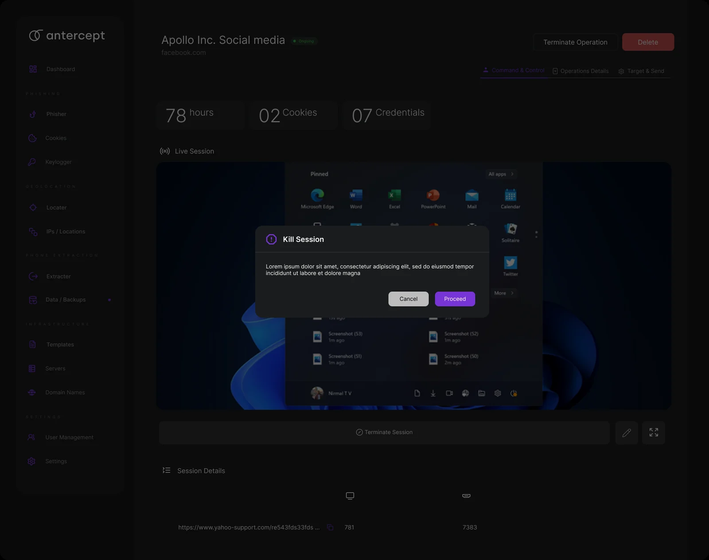
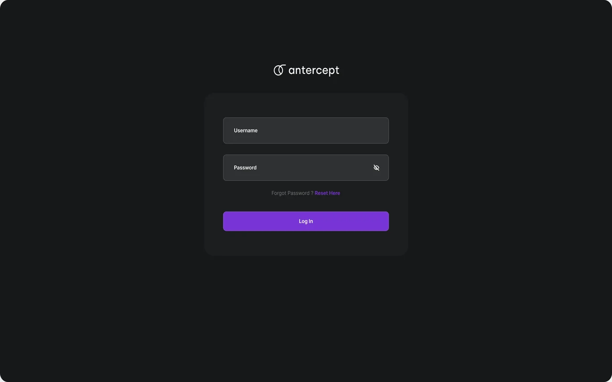
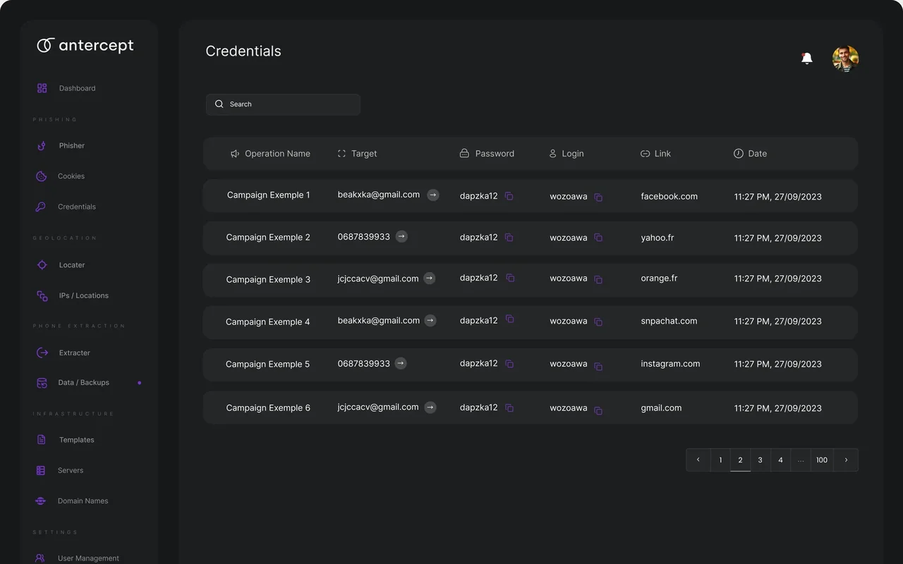

The product
One console.
Thirteen modules.
Real screens from Antercept: the dashboard, the phishing operations, the captured evidence, geolocation and the infrastructure behind it.

 Phisher · operations
Phisher · operations
Operation · live session Credentials · evidence
Credentials · evidence Cookies · evidence
Cookies · evidence Locater · geolocation
Locater · geolocation Templates · management
Templates · management Infection · payloads
Infection · payloads
These are design screens from the Antercept product. All names, targets, numbers and sessions shown in them are placeholder design content, not a live operation.
What Antercept does
Three capabilities,
one operation.
The AI that writes the lure, the model that predicts who falls for it, and the console that runs the campaign and manages the evidence.
-

ICapability I · AI template studio
The AI that builds the lure
Give it a brand and a channel. Antercept composes the awareness template, then explains why every line works — and predicts the campaign’s outcome before you send it.
AItemplate studio 2channels · email & SMS 0–100predicted click rateRead the capability -

IICapability II · Evidence management
Managing what a click reveals
In a controlled test, a click yields a session, a cookie, a credential. Antercept organises each one as evidence of exposure, ready for the security team to act on.
3evidence types 1exposure timeline per-targetrisk scoreRead the capability -
 III
III
Capability III · Running the operation
The map and the machinery
Geolocation, IPs and device views on one side; the servers, domains and providers Antercept manages on the other. The infrastructure that runs an awareness programme at scale.
6operations modules 1live map managedinfrastructureRead the capability
The operator console
Run the whole
operation from here.
Pick a campaign. Watch targets move from pending to opened to clicked. Open a target to see its device, its evidence and its risk, and mark the test resolved.
Everything here is fictional sample data and runs locally in your browser. This console demonstrates how Antercept manages a campaign; it does not contact anyone or perform any real action.
Enable JavaScript to open the console. The capabilities remain described in the chapters above.
What Antercept manages
One platform.
The whole programme.
From the first template to the final report, every part of an awareness operation lives in one place.
- The AI builds
- Awareness templates across email and SMS, composed from a brand and a pretext, with a predicted click and report rate attached to every campaign before it launches.
- The console runs
- Phisher, Cookies and Credentials; Locater and IPs; Extracter and Data; Templates, Servers and Domains — thirteen modules that run and record a controlled campaign end to end.
- The team sees
- A live map of who opened, clicked and reported, a per-target risk score, and an exposure timeline the security team hands to leadership as the result of the test.
Antercept is built for authorized security-awareness testing and red-team engagements. All identities, brands, domains, figures and captures shown on this page are fictional sample data generated locally for demonstration — not real people, real credentials, or a live operation.